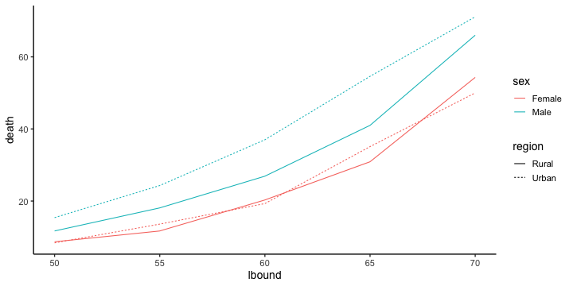
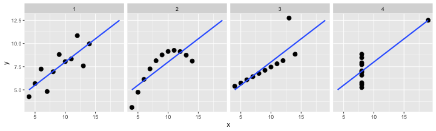

Hands-on R Lecture for Makino Lab
- Why do we use R?
- R basics
- Visualization with R
- Tidying and transforming data with R
- Statistical analysis with R
- File management with Git+GitHub
2019-10-16 生物棟大会議室
使える形にデータを整える
Happy families are all alike;
every unhappy family is unhappy in its own way
— Leo Tolstoy “Anna Karenina”tidy datasets are all alike,
but every messy dataset is messy in its own way
— Hadley Wickham
- 出発点となるデータはさまざま
- laboratory notebook, field notebook、
- database, simulation…
- 解析や作図に使えるデータ形式はほぼ決まってる
ggplot(data, ...),glm(..., data, ...), …
整然データ tidy data
- Each variable (変数) must have its own column (列).
- Each observation (観測) must have its own row (行).
- Each value must have its own cell.
print(diamonds) carat cut color clarity depth table price x y z
<dbl> <ord> <ord> <ord> <dbl> <dbl> <int> <dbl> <dbl> <dbl>
1 0.23 Ideal E SI2 61.5 55 326 3.95 3.98 2.43
2 0.21 Premium E SI1 59.8 61 326 3.89 3.84 2.31
3 0.23 Good E VS1 56.9 65 327 4.05 4.07 2.31
4 0.29 Premium I VS2 62.4 58 334 4.20 4.23 2.63
--
53937 0.72 Good D SI1 63.1 55 2757 5.69 5.75 3.61
53938 0.70 Very Good D SI1 62.8 60 2757 5.66 5.68 3.56
53939 0.86 Premium H SI2 61.0 58 2757 6.15 6.12 3.74
53940 0.75 Ideal D SI2 62.2 55 2757 5.83 5.87 3.64
http://r4ds.had.co.nz/tidy-data.html
https://speakerdeck.com/fnshr/zheng-ran-detatutenani
tidy data vs messy data


Each observation has its own row.
Each value has its own cell.
tidy data vs messy data


Each observation has its own row.
Each value has its own cell.
tidy data vs messy data


Each observation has its own row.
Each value has its own cell.
tidy data vs messy data

Each observation has its own row.
Each value has its own cell.
Today we learn data preparation
VADeaths Rural Male Rural Female Urban Male Urban Female
50-54 11.7 8.7 15.4 8.4
55-59 18.1 11.7 24.3 13.6
60-64 26.9 20.3 37.0 19.3
65-69 41.0 30.9 54.6 35.1
70-74 66.0 54.3 71.1 50.0
↓下ごしらえ
lbound ubound region sex death
<int> <int> <chr> <chr> <dbl>
1 50 54 Rural Male 11.7
2 50 54 Rural Female 8.7
3 50 54 Urban Male 15.4
4 50 54 Urban Female 8.4
--
17 70 74 Rural Male 66.0
18 70 74 Rural Female 54.3
19 70 74 Urban Male 71.1
20 70 74 Urban Female 50.0
tidyverseに便利な道具が揃ってる

Rでデータを上手に扱うためのパッケージ群
install.packages("tidyverse")
library(tidyverse)
# core packages are loaded- 統一的な使い勝手
- シンプルな関数を繋げて使うデザイン

今回はそれらのごく一部をご紹介
dplyr — data.frameの高速処理担当

シンプルな関数がたくさん。
繋げて使う (piping)
- 抽出
filter(),select(),distinct(),sample_n()- 変更・追加
mutate(),rename()- 要約・集計
group_by(),summarize(),count()- ソート
arrange()- 結合
- 行方向:
bind_rows() - 列方向:
left_join(),inner_join(),full_join()
etc.
dplyrの基本的な使い方
小さな関数を繋げて使う。
result = diamonds %>% # 生データから出発して
select(carat, cut, price) %>% # 列を抽出して
filter(carat > 2) %>% # 行を抽出して
group_by(cut) %>% # グループ化して
summarize_all(mean) %>% # それぞれ平均を計算
print() # 表示してみる cut carat price
<ord> <dbl> <dbl>
1 Fair 2.297692 11972.12
2 Good 2.139226 14628.99
3 Very Good 2.120232 15133.04
4 Premium 2.155707 14992.23
5 Ideal 2.147463 15589.13
What is %>% ?
Pipe operator (パイプ演算子) %>%
パイプの左側の変数を、右側の関数の第一引数にねじ込む:
# These are equivalent:
diamonds %>% filter(carat > 2)
filter(diamonds, carat > 2)下ごしらえの流れ作業に便利:
diamonds %>% select(carat, price) %>% filter(carat > 2) %>% ...
# data %>% do_A() %>% do_B() %>% do_C() %>% ...[PRACTICE] Rewrite the following code without %>%:
seq_len(6) %>% sum()[1] 21
letters %>% toupper() %>% head(3)[1] "A" "B" "C"
[ANSWER]
sum(seq_len(6))
head(toupper(letters), 3)If we don’t use pipe operator %>%
😐 Use temporary variables (一時変数):
tmp1 = select(diamonds, carat, cut, price) # 列を抽出して
tmp2 = filter(tmp1, carat > 2) # 行を抽出して
tmp3 = group_by(tmp2, cut) # グループ化して
result = summarize_all(tmp3, mean) # それぞれ平均を計算😐 Reuse the same variable:
result = select(diamonds, carat, cut, price) # 列を抽出して
result = filter(result, carat > 2) # 行を抽出して
result = group_by(result, cut) # グループ化して
result = summarize_all(result, mean) # それぞれ平均を計算Not too bad, but redundant.
If we don’t use pipe operator %>%
😫 Do it without temporary variables:
result = summarize_all( # それぞれ平均を計算
group_by( # グループ化して
filter( # 行を抽出して
select(diamonds, carat, cut, price), # 列を抽出して
carat > 2), # 行を抽出して
cut), # グループ化して
mean) # それぞれ平均を計算🤪 Unreadable:
result = summarize_all(group_by(filter(select(diamonds, carat, cut, price), carat > 2), cut), mean)Very difficult to follow the logic.
Let’s use pipe operator %>%
😁 Easy to follow the logic:
result = diamonds %>%
select(carat, cut, price) %>% # 列を抽出して
filter(carat > 2) %>% # 行を抽出して
group_by(cut) %>% # グループ化して
summarize_all(mean) %>% # それぞれ平均を計算
print() # 表示してみる cut carat price
<ord> <dbl> <dbl>
1 Fair 2.297692 11972.12
2 Good 2.139226 14628.99
3 Very Good 2.120232 15133.04
4 Premium 2.155707 14992.23
5 Ideal 2.147463 15589.13
慣れるまではちょっと大変かも。無理して使わなくても大丈夫。
dplyr basics
Load the package, and view the data.
library(tidyverse)
print(diamonds)
View(diamonds) # RStudio carat cut color clarity depth table price x y z
<dbl> <ord> <ord> <ord> <dbl> <dbl> <int> <dbl> <dbl> <dbl>
1 0.23 Ideal E SI2 61.5 55 326 3.95 3.98 2.43
2 0.21 Premium E SI1 59.8 61 326 3.89 3.84 2.31
3 0.23 Good E VS1 56.9 65 327 4.05 4.07 2.31
4 0.29 Premium I VS2 62.4 58 334 4.20 4.23 2.63
--
53937 0.72 Good D SI1 63.1 55 2757 5.69 5.75 3.61
53938 0.70 Very Good D SI1 62.8 60 2757 5.66 5.68 3.56
53939 0.86 Premium H SI2 61.0 58 2757 6.15 6.12 3.74
53940 0.75 Ideal D SI2 62.2 55 2757 5.83 5.87 3.64
dplyr basics: select()
Select columns (列) by names.
result = diamonds %>%
select(carat, cut, price) %>%
print() carat cut price
<dbl> <ord> <int>
1 0.23 Ideal 326
2 0.21 Premium 326
3 0.23 Good 327
4 0.29 Premium 334
--
53937 0.72 Good 2757
53938 0.70 Very Good 2757
53939 0.86 Premium 2757
53940 0.75 Ideal 2757
dplyr basics: select()
Select columns (列) by numbers.
result = diamonds %>%
select(1, 2, 7) %>%
print() carat cut price
<dbl> <ord> <int>
1 0.23 Ideal 326
2 0.21 Premium 326
3 0.23 Good 327
4 0.29 Premium 334
--
53937 0.72 Good 2757
53938 0.70 Very Good 2757
53939 0.86 Premium 2757
53940 0.75 Ideal 2757
dplyr basics: select()
Select columns (列) by negative match.
result = diamonds %>%
select(-carat, -cut, -price) %>%
print() color clarity depth table x y z
<ord> <ord> <dbl> <dbl> <dbl> <dbl> <dbl>
1 E SI2 61.5 55 3.95 3.98 2.43
2 E SI1 59.8 61 3.89 3.84 2.31
3 E VS1 56.9 65 4.05 4.07 2.31
4 I VS2 62.4 58 4.20 4.23 2.63
--
53937 D SI1 63.1 55 5.69 5.75 3.61
53938 D SI1 62.8 60 5.66 5.68 3.56
53939 H SI2 61.0 58 6.15 6.12 3.74
53940 D SI2 62.2 55 5.83 5.87 3.64
dplyr basics: select()
Select columns (列) by partial match.
result = diamonds %>%
select(starts_with("c")) %>%
print() carat cut color clarity
<dbl> <ord> <ord> <ord>
1 0.23 Ideal E SI2
2 0.21 Premium E SI1
3 0.23 Good E VS1
4 0.29 Premium I VS2
--
53937 0.72 Good D SI1
53938 0.70 Very Good D SI1
53939 0.86 Premium H SI2
53940 0.75 Ideal D SI2
See tidyselect helpers for more details.
dplyr basics: filter()
Filter rows (行) by exact match.
result = diamonds %>%
filter(cut == "Ideal") %>%
print() carat cut color clarity depth table price x y z
<dbl> <ord> <ord> <ord> <dbl> <dbl> <int> <dbl> <dbl> <dbl>
1 0.23 Ideal E SI2 61.5 55 326 3.95 3.98 2.43
2 0.23 Ideal J VS1 62.8 56 340 3.93 3.90 2.46
3 0.31 Ideal J SI2 62.2 54 344 4.35 4.37 2.71
4 0.30 Ideal I SI2 62.0 54 348 4.31 4.34 2.68
--
21548 0.71 Ideal E SI1 61.9 56 2756 5.71 5.73 3.54
21549 0.71 Ideal G VS1 61.4 56 2756 5.76 5.73 3.53
21550 0.72 Ideal D SI1 60.8 57 2757 5.75 5.76 3.50
21551 0.75 Ideal D SI2 62.2 55 2757 5.83 5.87 3.64
dplyr basics: filter()
Filter rows (行) by group membership.
result = diamonds %>%
filter(cut %in% c("Ideal", "Good")) %>%
print() carat cut color clarity depth table price x y z
<dbl> <ord> <ord> <ord> <dbl> <dbl> <int> <dbl> <dbl> <dbl>
1 0.23 Ideal E SI2 61.5 55 326 3.95 3.98 2.43
2 0.23 Good E VS1 56.9 65 327 4.05 4.07 2.31
3 0.31 Good J SI2 63.3 58 335 4.34 4.35 2.75
4 0.30 Good J SI1 64.0 55 339 4.25 4.28 2.73
--
26454 0.71 Ideal G VS1 61.4 56 2756 5.76 5.73 3.53
26455 0.72 Ideal D SI1 60.8 57 2757 5.75 5.76 3.50
26456 0.72 Good D SI1 63.1 55 2757 5.69 5.75 3.61
26457 0.75 Ideal D SI2 62.2 55 2757 5.83 5.87 3.64
dplyr basics: filter()
Filter rows (行) with unequal sign.
result = diamonds %>%
filter(price >= 1000) %>%
print() carat cut color clarity depth table price x y z
<dbl> <ord> <ord> <ord> <dbl> <dbl> <int> <dbl> <dbl> <dbl>
1 0.70 Ideal E SI1 62.5 57 2757 5.70 5.72 3.57
2 0.86 Fair E SI2 55.1 69 2757 6.45 6.33 3.52
3 0.70 Ideal G VS2 61.6 56 2757 5.70 5.67 3.50
4 0.71 Very Good E VS2 62.4 57 2759 5.68 5.73 3.56
--
39438 0.72 Good D SI1 63.1 55 2757 5.69 5.75 3.61
39439 0.70 Very Good D SI1 62.8 60 2757 5.66 5.68 3.56
39440 0.86 Premium H SI2 61.0 58 2757 6.15 6.12 3.74
39441 0.75 Ideal D SI2 62.2 55 2757 5.83 5.87 3.64
dplyr basics: filter()
Filter rows (行) by multiple conditions (AND).
result = diamonds %>%
filter(carat > 2 & price < 14000) %>%
print() carat cut color clarity depth table price x y z
<dbl> <ord> <ord> <ord> <dbl> <dbl> <int> <dbl> <dbl> <dbl>
1 2.06 Premium J I1 61.2 58 5203 8.10 8.07 4.95
2 2.14 Fair J I1 69.4 57 5405 7.74 7.70 5.36
3 2.15 Fair J I1 65.5 57 5430 8.01 7.95 5.23
4 2.22 Fair J I1 66.7 56 5607 8.04 8.02 5.36
--
641 2.07 Premium H SI1 62.7 58 13993 8.14 8.09 5.09
642 2.07 Good I SI1 63.6 58 13993 8.09 7.99 5.11
643 2.13 Very Good J SI1 62.8 58 13996 8.13 8.17 5.12
644 2.11 Premium J SI1 62.4 58 13996 8.27 8.17 5.13
dplyr basics: filter()
Filter rows (行) by multiple conditions (OR).
result = diamonds %>%
filter(carat > 2 | price < 14000) %>%
print() carat cut color clarity depth table price x y z
<dbl> <ord> <ord> <ord> <dbl> <dbl> <int> <dbl> <dbl> <dbl>
1 0.23 Ideal E SI2 61.5 55 326 3.95 3.98 2.43
2 0.21 Premium E SI1 59.8 61 326 3.89 3.84 2.31
3 0.23 Good E VS1 56.9 65 327 4.05 4.07 2.31
4 0.29 Premium I VS2 62.4 58 334 4.20 4.23 2.63
--
53023 0.72 Good D SI1 63.1 55 2757 5.69 5.75 3.61
53024 0.70 Very Good D SI1 62.8 60 2757 5.66 5.68 3.56
53025 0.86 Premium H SI2 61.0 58 2757 6.15 6.12 3.74
53026 0.75 Ideal D SI2 62.2 55 2757 5.83 5.87 3.64
dplyr basics: mutate()
Create new columns or modify existing columns.
result = diamonds %>%
mutate(ratio = price / carat,
price = price * 108.36) %>%
print() carat cut color clarity depth table price x y z ratio
<dbl> <ord> <ord> <ord> <dbl> <dbl> <dbl> <dbl> <dbl> <dbl> <dbl>
1 0.23 Ideal E SI2 61.5 55 35325.36 3.95 3.98 2.43 1417.391
2 0.21 Premium E SI1 59.8 61 35325.36 3.89 3.84 2.31 1552.381
3 0.23 Good E VS1 56.9 65 35433.72 4.05 4.07 2.31 1421.739
4 0.29 Premium I VS2 62.4 58 36192.24 4.20 4.23 2.63 1151.724
--
53937 0.72 Good D SI1 63.1 55 298748.52 5.69 5.75 3.61 3829.167
53938 0.70 Very Good D SI1 62.8 60 298748.52 5.66 5.68 3.56 3938.571
53939 0.86 Premium H SI2 61.0 58 298748.52 6.15 6.12 3.74 3205.814
53940 0.75 Ideal D SI2 62.2 55 298748.52 5.83 5.87 3.64 3676.000
dplyr basics: summarize()
Summarize column values.
result = diamonds %>%
summarize(mean(price), max(carat)) %>%
print() mean(price) max(carat)
<dbl> <dbl>
1 3932.8 5.01
Use min(), max(), mean(), median(), var(), sd(), etc.
dplyr basics: summarize()
Summarize column values by groups.
result = diamonds %>%
group_by(cut) %>%
summarize(avg_price = mean(price),
max_carat = max(carat)) %>%
print() cut avg_price max_carat
<ord> <dbl> <dbl>
1 Fair 4358.758 5.01
2 Good 3928.864 3.01
3 Very Good 3981.760 4.00
4 Premium 4584.258 4.01
5 Ideal 3457.542 3.50
dplyr basics: arrange()
Sort rows. Use desc() for reversed order.
result = diamonds %>%
arrange(color, desc(carat)) %>% # 色の昇順。色が同じなら大きさ降順
print() carat cut color clarity depth table price x y z
<dbl> <ord> <ord> <ord> <dbl> <dbl> <int> <dbl> <dbl> <dbl>
1 3.40 Fair D I1 66.8 52 15964 9.42 9.34 6.27
2 2.75 Ideal D I1 60.9 57 13156 9.04 8.98 5.49
3 2.58 Very Good D SI2 58.9 63 14749 9.08 9.01 5.33
4 2.57 Premium D SI2 58.9 58 17924 8.99 8.94 5.28
--
53937 0.27 Very Good J VVS2 60.8 57 443 4.16 4.20 2.54
53938 0.24 Very Good J VVS2 62.8 57 336 3.94 3.96 2.48
53939 0.24 Ideal J VVS2 62.8 57 432 3.96 3.94 2.48
53940 0.23 Ideal J VS1 62.8 56 340 3.93 3.90 2.46
dplyr basics: *_join()
Combine two tables depending on column values.
band_members %>% inner_join(band_instruments, by = "name") name band plays
<chr> <chr> <chr>
1 John Beatles guitar
2 Paul Beatles bass
band_members %>% left_join(band_instruments, by = "name") name band plays
<chr> <chr> <chr>
1 Mick Stones <NA>
2 John Beatles guitar
3 Paul Beatles bass
band_members %>% full_join(band_instruments, by = "name") name band plays
<chr> <chr> <chr>
1 Mick Stones <NA>
2 John Beatles guitar
3 Paul Beatles bass
4 Keith <NA> guitar
tidyr — data.frameの変形・整形担当

- 横長から縦長に
pivot_longer()- 縦長から横長に
pivot_wider()- 入れ子構造をつくる、解消する
nest(),unnest()- 1列を複数の列に分離
separate()
etc.
tidyr::pivot_longer() 横長から縦長に
複数列にまたがる値を1列にする(ここではvalue)。
そのラベルも合わせて移動(ここではname)。
iris_long = iris %>% head(2L) %>% # 最初の2行だけ
rownames_to_column("id") %>% # ID列を追加
print() %>% # 途中経過を表示
pivot_longer(c(-id, -Species), names_to = "name", values_to = "value") %>%
print() # id, Species以外の値を移動 id Sepal.Length Sepal.Width Petal.Length Petal.Width Species
<chr> <dbl> <dbl> <dbl> <dbl> <fct>
1 1 5.1 3.5 1.4 0.2 setosa
2 2 4.9 3.0 1.4 0.2 setosa
id Species name value
<chr> <fct> <chr> <dbl>
1 1 setosa Sepal.Length 5.1
2 1 setosa Sepal.Width 3.5
3 1 setosa Petal.Length 1.4
4 1 setosa Petal.Width 0.2
5 2 setosa Sepal.Length 4.9
6 2 setosa Sepal.Width 3.0
7 2 setosa Petal.Length 1.4
8 2 setosa Petal.Width 0.2
tidyr::pivot_wider() 縦長から横長に
1列に収まっていた値(value)を複数列の行列に変換。
そのラベル(name)を列の名前にする。
iris_long %>% print() %>% # さっきlong-formatにしたやつ
pivot_wider(names_from = name, values_from = value) # 横長に戻す id Species name value
<chr> <fct> <chr> <dbl>
1 1 setosa Sepal.Length 5.1
2 1 setosa Sepal.Width 3.5
3 1 setosa Petal.Length 1.4
4 1 setosa Petal.Width 0.2
5 2 setosa Sepal.Length 4.9
6 2 setosa Sepal.Width 3.0
7 2 setosa Petal.Length 1.4
8 2 setosa Petal.Width 0.2
id Species Sepal.Length Sepal.Width Petal.Length Petal.Width
<chr> <fct> <dbl> <dbl> <dbl> <dbl>
1 1 setosa 5.1 3.5 1.4 0.2
2 2 setosa 4.9 3.0 1.4 0.2
tidyr::separate() 列を分離
iris_long %>% print() %>%
separate(name, c("part", "measure")) # 列を分離 id Species name value
<chr> <fct> <chr> <dbl>
1 1 setosa Sepal.Length 5.1
2 1 setosa Sepal.Width 3.5
3 1 setosa Petal.Length 1.4
4 1 setosa Petal.Width 0.2
5 2 setosa Sepal.Length 4.9
6 2 setosa Sepal.Width 3.0
7 2 setosa Petal.Length 1.4
8 2 setosa Petal.Width 0.2
id Species part measure value
<chr> <fct> <chr> <chr> <dbl>
1 1 setosa Sepal Length 5.1
2 1 setosa Sepal Width 3.5
3 1 setosa Petal Length 1.4
4 1 setosa Petal Width 0.2
5 2 setosa Sepal Length 4.9
6 2 setosa Sepal Width 3.0
7 2 setosa Petal Length 1.4
8 2 setosa Petal Width 0.2
tidyr::nest() 入れ子にする
グループ毎にdata.frameを区切ってlist型の列に入れる。

tidyr::nest() 入れ子にする
グループ毎にdata.frameを区切ってlist型の列に入れる。
iris_nested = iris %>%
as_tibble() %>%
nest(data = -Species) %>% print() Species data
<fct> <vctrs_list_of>
1 setosa <tbl_df [50 x 4]>
2 versicolor <tbl_df [50 x 4]>
3 virginica <tbl_df [50 x 4]>
iris_nested$data[[1L]] Sepal.Length Sepal.Width Petal.Length Petal.Width
<dbl> <dbl> <dbl> <dbl>
1 5.1 3.5 1.4 0.2
2 4.9 3.0 1.4 0.2
3 4.7 3.2 1.3 0.2
4 4.6 3.1 1.5 0.2
--
47 5.1 3.8 1.6 0.2
48 4.6 3.2 1.4 0.2
49 5.3 3.7 1.5 0.2
50 5.0 3.3 1.4 0.2
purrr

listやループの処理担当。
map(),walk()map_int(),map_dbl(),map_chr()map_dfr()pmap(),map2()flatten()- etc.
標準Rの lapply(), sapply(), vapply(), unlist() などの代わりに
purrr::map(): リストの各要素に関数を適用
v = c(1, 2, 3) # 長さ3のベクトル
v + 10 # それぞれに+10[1] 11 12 13
plus_ten = function(x) {x + 10} # +10する関数
purrr::map(v, plus_ten) # それぞれに適用[[1]]
[1] 11
[[2]]
[1] 12
[[3]]
[1] 13
この例ではあまり嬉しくないけど、使いどころは結構ある
Read multiple files in a directory
r-training-2019/ # プロジェクトの最上階
├── data/ # データを置くディレクトリ
│ ├── cheetah.tsv # 同じ形のデータ
│ ├── giraffe.tsv
│ └── zebra.tsv
├─
# Get the file list: "data/cheetah.tsv", ...
files = fs::dir_ls("data", glob = "*.tsv")
# Read and combine
purrr::map_dfr(files, readr::read_tsv)
# It is equivalent to
purrr::map(files, readr::read_tsv) %>%
dplyr::bind_rows()Example: VADeaths
as.data.frame(VADeaths) # data.frameに変換
# 行名を列に
# 縦長に変形したい Rural Male Rural Female Urban Male Urban Female
50-54 11.7 8.7 15.4 8.4
55-59 18.1 11.7 24.3 13.6
60-64 26.9 20.3 37.0 19.3
65-69 41.0 30.9 54.6 35.1
70-74 66.0 54.3 71.1 50.0
Example: VADeaths
as.data.frame(VADeaths) %>% # data.frameに変換
tibble::rownames_to_column("age") # 行名を列に
# 縦長に変形したい age Rural Male Rural Female Urban Male Urban Female
1 50-54 11.7 8.7 15.4 8.4
2 55-59 18.1 11.7 24.3 13.6
3 60-64 26.9 20.3 37.0 19.3
4 65-69 41.0 30.9 54.6 35.1
5 70-74 66.0 54.3 71.1 50.0
Example: VADeaths
as.data.frame(VADeaths) %>% # data.frameに変換
tibble::rownames_to_column("age") %>% # 行名を列に
pivot_longer(-age) # age以外を移動して縦長化
# 新しいname列を分割 age name value
<chr> <chr> <dbl>
1 50-54 Rural Male 11.7
2 50-54 Rural Female 8.7
3 50-54 Urban Male 15.4
4 50-54 Urban Female 8.4
--
17 70-74 Rural Male 66.0
18 70-74 Rural Female 54.3
19 70-74 Urban Male 71.1
20 70-74 Urban Female 50.0
Example: VADeaths
as.data.frame(VADeaths) %>% # data.frameに変換
tibble::rownames_to_column("age") %>% # 行名を列に
pivot_longer(-age) %>% # age以外を移動して縦長化
separate(name, c("region", "sex")) # 新しいname列を分割 age region sex value
<chr> <chr> <chr> <dbl>
1 50-54 Rural Male 11.7
2 50-54 Rural Female 8.7
3 50-54 Urban Male 15.4
4 50-54 Urban Female 8.4
--
17 70-74 Rural Male 66.0
18 70-74 Rural Female 54.3
19 70-74 Urban Male 71.1
20 70-74 Urban Female 50.0
Example: VADeaths
va_deaths = as.data.frame(VADeaths) %>% # data.frameに変換
tibble::rownames_to_column("age") %>% # 行名を列に
pivot_longer(-age) %>% # age以外を移動して縦長化
separate(name, c("region", "sex")) %>% # 新しいname列を分割
separate(age, c("lbound", "ubound"), "-", convert = TRUE) %>%
print() # 下限と上限を分離 lbound ubound region sex value
<int> <int> <chr> <chr> <dbl>
1 50 54 Rural Male 11.7
2 50 54 Rural Female 8.7
3 50 54 Urban Male 15.4
4 50 54 Urban Female 8.4
--
17 70 74 Rural Male 66.0
18 70 74 Rural Female 54.3
19 70 74 Urban Male 71.1
20 70 74 Urban Female 50.0
Example: VADeaths 別解
va_deaths = as.data.frame(VADeaths) %>% # data.frameに変換
tibble::rownames_to_column("age") %>% # 行名を列に
tidyr::pivot_longer( # 縦長に変形したい
-age, # age以外の列に入ってる値を移動
names_to = c("region", "sex"), # 元の列名を2つに分離
names_sep = " ", # スペースで切る
values_to = "death") %>% # 値の行き先の列名
tidyr::separate(age, c("lbound", "ubound"), "-", convert = TRUE) %>%
print() # 下限と上限を分離 lbound ubound region sex death
<int> <int> <chr> <chr> <dbl>
1 50 54 Rural Male 11.7
2 50 54 Rural Female 8.7
3 50 54 Urban Male 15.4
4 50 54 Urban Female 8.4
--
17 70 74 Rural Male 66.0
18 70 74 Rural Female 54.3
19 70 74 Urban Male 71.1
20 70 74 Urban Female 50.0
Example: VADeaths
va_deaths %>%
ggplot(aes(lbound, death)) +
geom_point(aes(color = sex, shape = region), size = 5) +
theme_classic(base_size = 16)
Visualize and summarize anscombe
4組のx-yは、平均・分散・相関係数がほぼ同じ？
anscombe %>%
rowid_to_column("id") # IDをつけておく
# x y で始まる列の値を移して縦長に id x1 x2 x3 x4 y1 y2 y3 y4
<int> <dbl> <dbl> <dbl> <dbl> <dbl> <dbl> <dbl> <dbl>
1 1 10 10 10 8 8.04 9.14 7.46 6.58
2 2 8 8 8 8 6.95 8.14 6.77 5.76
3 3 13 13 13 8 7.58 8.74 12.74 7.71
4 4 9 9 9 8 8.81 8.77 7.11 8.84
--
8 8 4 4 4 19 4.26 3.10 5.39 12.50
9 9 12 12 12 8 10.84 9.13 8.15 5.56
10 10 7 7 7 8 4.82 7.26 6.42 7.91
11 11 5 5 5 8 5.68 4.74 5.73 6.89
ggplot does not accept this format. Let’s transformt it.
Visualize and summarize anscombe
4組のx-yは、平均・分散・相関係数がほぼ同じ？
anscombe %>%
rowid_to_column("id") %>% # IDをつけておく
pivot_longer(matches("^x|y")) # x y で始まる列の値を移して縦長に
# name列を分割 id name value
<int> <chr> <dbl>
1 1 x1 10.00
2 1 x2 10.00
3 1 x3 10.00
4 1 x4 8.00
--
85 11 y1 5.68
86 11 y2 4.74
87 11 y3 5.73
88 11 y4 6.89
Visualize and summarize anscombe
4組のx-yは、平均・分散・相関係数がほぼ同じ？
anscombe %>%
rowid_to_column("id") %>% # IDをつけておく
pivot_longer(matches("^x|y")) %>% # x y で始まる列の値を移して縦長に
separate(name, c("axis", "group"), 1L, convert = TRUE)
# name列を分割 id axis group value
<int> <chr> <int> <dbl>
1 1 x 1 10.00
2 1 x 2 10.00
3 1 x 3 10.00
4 1 x 4 8.00
--
85 11 y 1 5.68
86 11 y 2 4.74
87 11 y 3 5.73
88 11 y 4 6.89
Visualize and summarize anscombe
4組のx-yは、平均・分散・相関係数がほぼ同じ？
tidy_anscombe = anscombe %>%
rowid_to_column("id") %>% # IDをつけておく
pivot_longer(matches("^x|y")) %>% # x y で始まる列の値を移して縦長に
separate(name, c("axis", "group"), 1L, convert = TRUE) %>%
# name列を分割
pivot_wider(names_from = axis, values_from = value) %>%
# axis列内の x y を列にして横長化
dplyr::arrange(group) %>% # グループごとに並べる
print() # ggplotしたい形！ id group x y
<int> <int> <dbl> <dbl>
1 1 1 10 8.04
2 2 1 8 6.95
3 3 1 13 7.58
4 4 1 9 8.81
--
41 8 4 19 12.50
42 9 4 8 5.56
43 10 4 8 7.91
44 11 4 8 6.89
Visualize and summarize anscombe 別解
4組のx-yは、平均・分散・相関係数がほぼ同じ？
tidy_anscombe = anscombe %>%
tidyr::pivot_longer( # 縦長に変形したい
everything(), # すべての列について
names_to = c(".value", "group"), # 新しい列名
names_sep = 1L, # 切る位置
names_ptypes = list(group = integer())) %>% # 型変換
dplyr::arrange(group) %>% # グループごとに並べる
print() # ggplotしたい形！ group x y
<int> <dbl> <dbl>
1 1 10 8.04
2 1 8 6.95
3 1 13 7.58
4 1 9 8.81
--
41 4 19 12.50
42 4 8 5.56
43 4 8 7.91
44 4 8 6.89
Visualize and summarize anscombe
4組のx-yは、平均・分散・相関係数がほぼ同じ？
ggplot(tidy_anscombe, aes(x, y)) +
geom_point(size = 3) +
stat_smooth(method = lm, se = FALSE, fullrange = TRUE) +
facet_wrap(~ group, nrow = 1L)
Visualize and summarize anscombe
4組のx-yは、平均・分散・相関係数がほぼ同じ？
tidy_anscombe %>%
dplyr::group_by(group) %>% # group列でグループ化して
dplyr::summarize( # x, y列を使ってsummarize
mean_x = mean(x),
mean_y = mean(y),
sd_x = sd(x),
sd_y = sd(y),
cor_xy = cor(x, y)
) group mean_x mean_y sd_x sd_y cor_xy
<int> <dbl> <dbl> <dbl> <dbl> <dbl>
1 1 9 7.500909 3.316625 2.031568 0.8164205
2 2 9 7.500909 3.316625 2.031657 0.8162365
3 3 9 7.500000 3.316625 2.030424 0.8162867
4 4 9 7.500909 3.316625 2.030579 0.8165214
例題: 数値+単位になっちゃってる列を処理
women2 = women %>% sample_n(2L) %>% dplyr::mutate(height = paste0(height, "in"), weight = paste(weight, "lbs")) %>% print() height weight
1 69in 150 lbs
2 58in 115 lbs
# 単位を捨てる (スペースの有無によらず可能)
women2 %>% dplyr::mutate(weight = readr::parse_number(weight)) height weight
1 69in 150
2 58in 115
# 単位を新しい列に分ける
women2 %>%
tidyr::separate(height, c("height", "uh"), -2L, convert=TRUE) %>%
tidyr::separate(weight, c("weight", "uw"), " ", convert=TRUE) height uh weight uw
1 69 in 150 lbs
2 58 in 115 lbs
Tidying and transforming data with R: Summary
- Tidy data is required for analysis and visualization.
- R + tidyverse can handle it.
- Original/raw data can be in any format,
but it should have some regular patterns.
- Original/raw data can be in any format,
- You don’t have to remember all the details.
Reference
- R for Data Science — Hadley Wickham and Garrett Grolemund
- http://r4ds.had.co.nz/
- Book
- 日本語版書籍(Rではじめるデータサイエンス)
- Older versions
- 「Rにやらせて楽しよう — データの可視化と下ごしらえ」 岩嵜航 2018
- 「Rを用いたデータ解析の基礎と応用」石川由希 2019 名古屋大学
- Official documents:
- tidyverse, dplyr, tidyr, purrr, tibble, readr, readxl, stringr
- 整然データとは何か — @f_nisihara
- https://speakerdeck.com/fnshr/zheng-ran-detatutenani
- http://id.fnshr.info/2017/01/09/tidy-data-intro/
おまけ: 文字列処理
全角英数字を半角に変換
c("ｔｐ５３", "ＫＲＡＳ") %>%
stringi::stri_trans_nfkc()[1] "tp53" "KRAS"
複雑な抽出・置換をしたい場合は stringrパッケージ で正規表現を使う:
c("Who am I? 24601!", "p = 0.02 *") %>%
str_extract("[\\d\\.]+") %>% # 連続する数字または小数点を抽出
as.numeric() # 数値に変換Error in str_extract(., "[\\d\\.]+"): could not find function "str_extract"
正規表現は強力！
名前の衝突・上書きなどによる事故を防ぐ
filter(...) でも動くのにわざわざ頭に dplyr:: 付ける？
- 今回の発表では、どのパッケージ由来かをなるべく明示したかった
- ほかのパッケージや自分の作業によって、
同じ名前の関数で上書きされちゃっても大丈夫なように:
filter = function(x, y) return(NULL) # うっかり同名の関数を作る
filter(iris, Petal.Length < 1.2) # 新しいほうが使われちゃうNULL
dplyr::filter(iris, Petal.Length < 1.2) # 明示したので大丈夫 Sepal.Length Sepal.Width Petal.Length Petal.Width Species
<dbl> <dbl> <dbl> <dbl> <fct>
1 4.3 3.0 1.1 0.1 setosa
2 4.6 3.6 1.0 0.2 setosa